ABURA SUMASHI
01El pequeño protector del sendero
🔥 Fuego🛡 Defensa
¡TU AVENTURA EMPIEZA ACÁ!
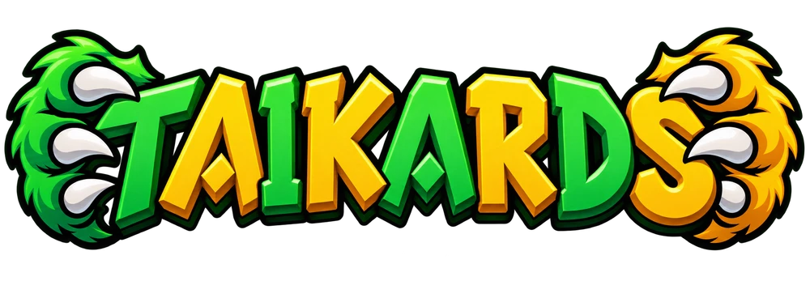
El Juego de CartasAcompañá a los Shisa a conocer a todos los yōkai de Japón y, próximamente, las criaturas mitológicas de todo el mundo.
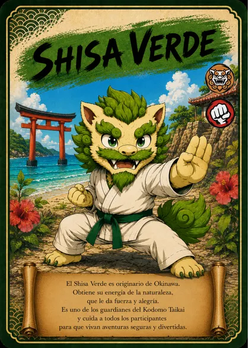
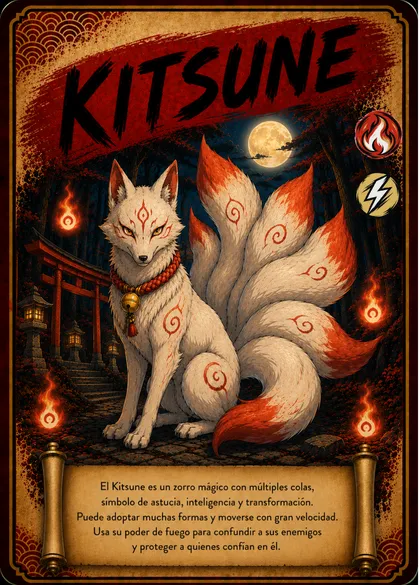
¡Los Shisa te están esperando!

ABRÍ EL LIBRO Y EMPEZÁ LA AVENTURA
Prepará tus criaturas, elegí un nivel y desafiá a un amigo. Te acompañamos paso a paso.
🧭 TU ÁLBUM DE AVENTURAS
¿A quién querés conocer hoy?
Tocá una carta y descubrí su historia.
Mostrando 48 de 48 cartas
El pequeño protector del sendero

Una sorpresa entre las olas

El gato de las mil sorpresas

La linterna que despertó

La fuerza de estar juntos

Dos amigos, un mismo camino

Una amistad que protege

Una chispa en la noche

Los vecinos bajo el suelo

La abuela que apaga las luces

Un ojo y muchas travesuras

La tela que aprendió a volar

Una vasija con mucho carácter

El travieso de los ríos
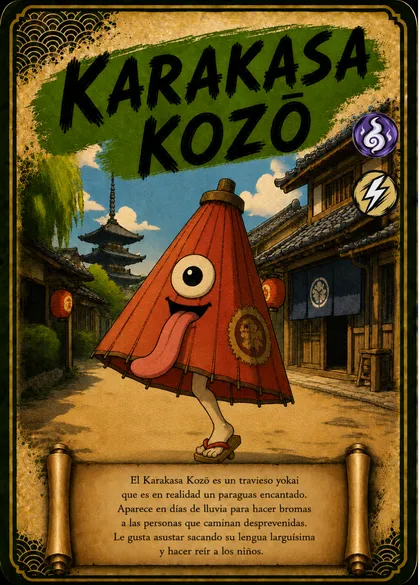
El paraguas saltarín
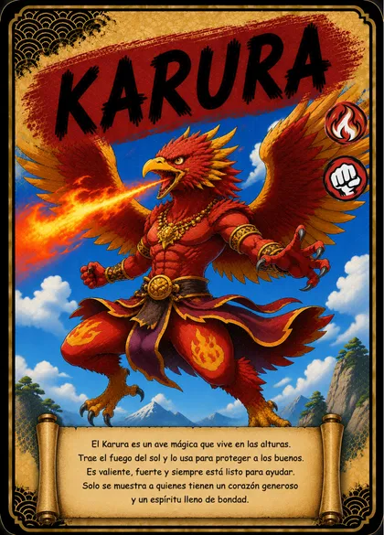
Alas que encienden el cielo

Un oso bajo el agua
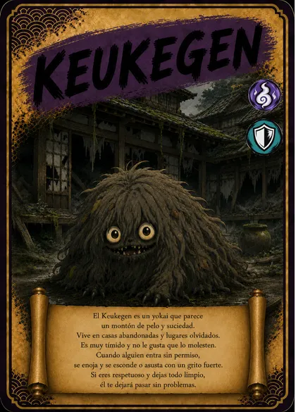
El tímido montón de pelo

El pequeño amigo de Okinawa

El zorro que cuida el camino
El zorro de las mil formas

La voz de los árboles
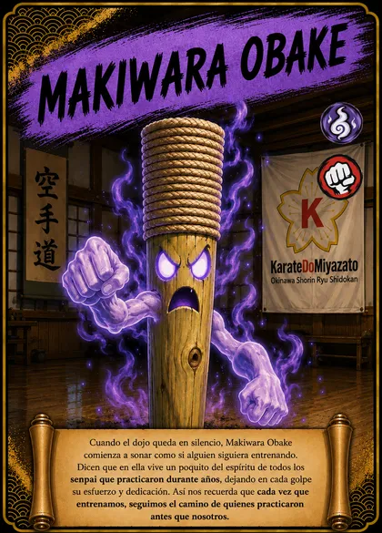
El espíritu del entrenamiento

El dragón de la corriente
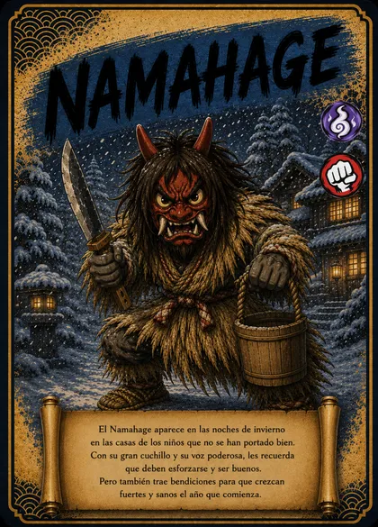
Una visita de invierno
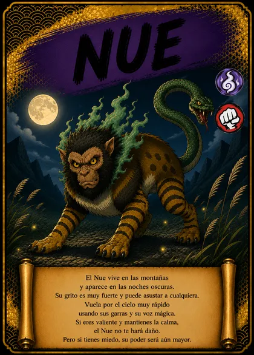
Un misterio de muchas formas
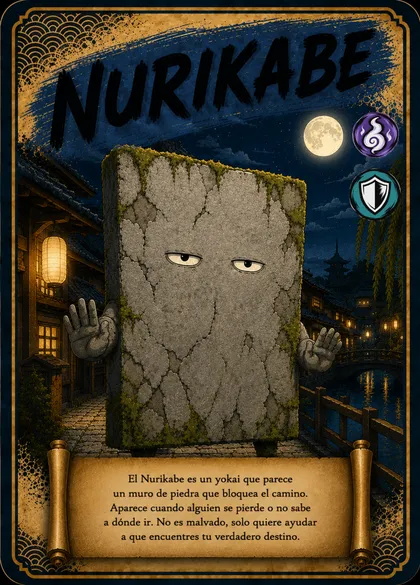
El muro que te hace pensar

El gran sapo de la montaña

Una fuerza que impone respeto
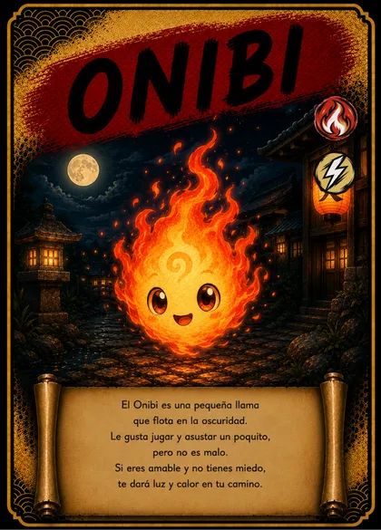
Una lucecita con personalidad
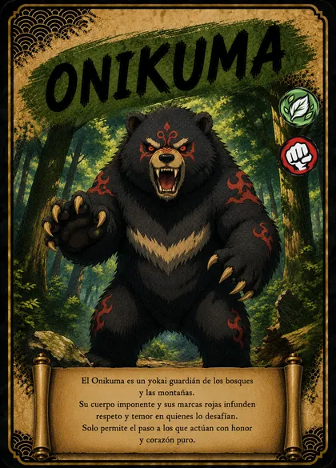
El gran oso del bosque
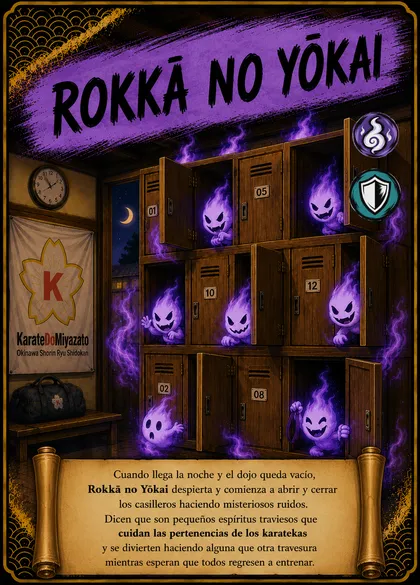
Los secretos del vestuario

El nadador de los ríos claros
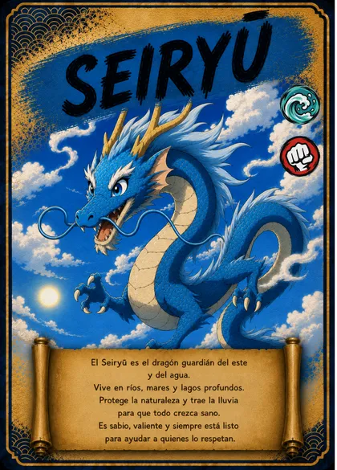
El dragón del este
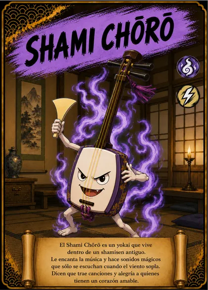
Una melodía que cobra vida
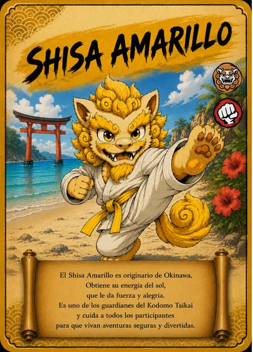
Un corazón lleno de sol
La calma de la naturaleza
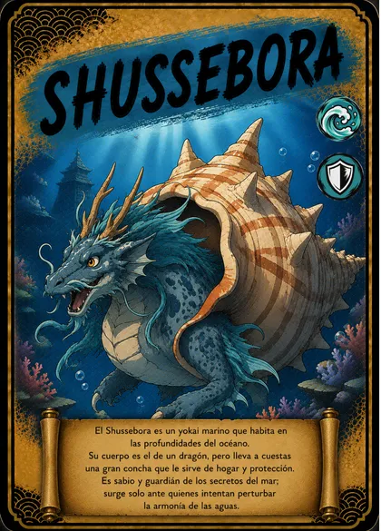
Un secreto dentro de la concha
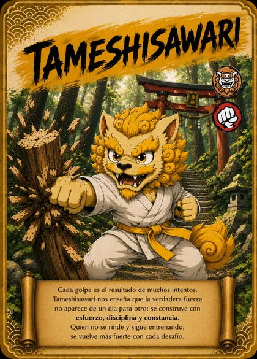
El valor de volver a intentar
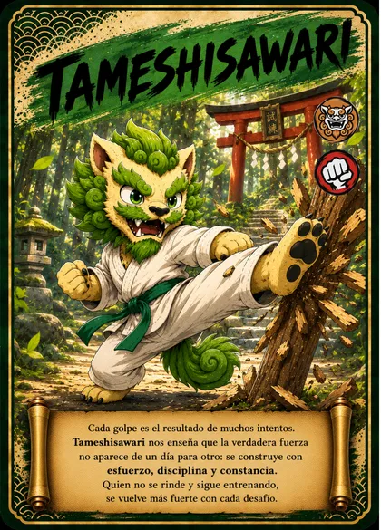
La paciencia también es fuerza
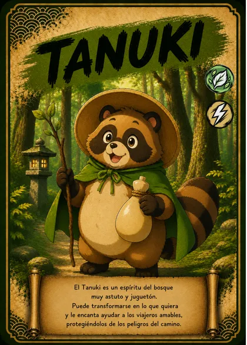
El maestro de las travesuras
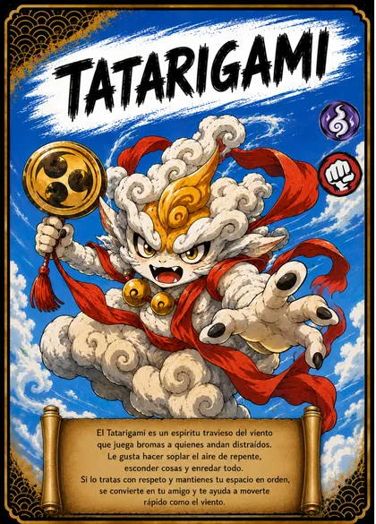
Un remolino de sorpresas
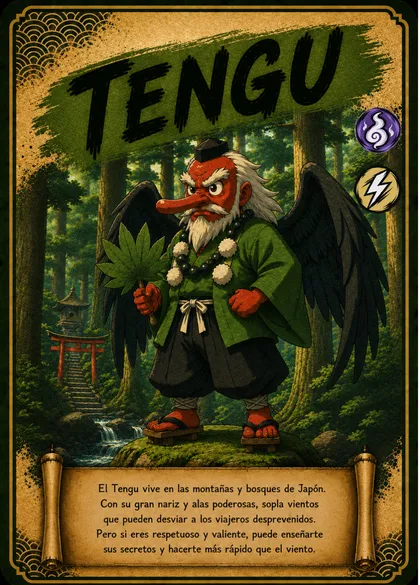
El viajero de las montañas
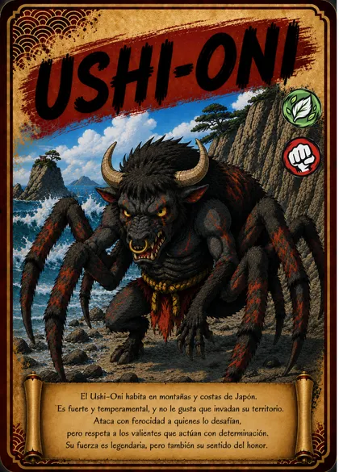
El enigma de la costa
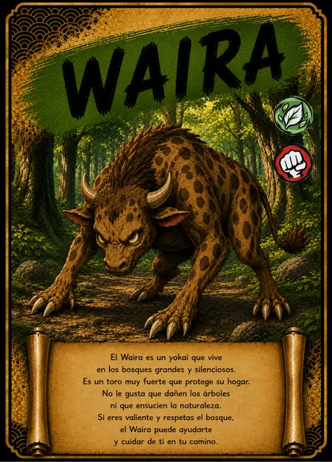
El habitante del bosque silencioso
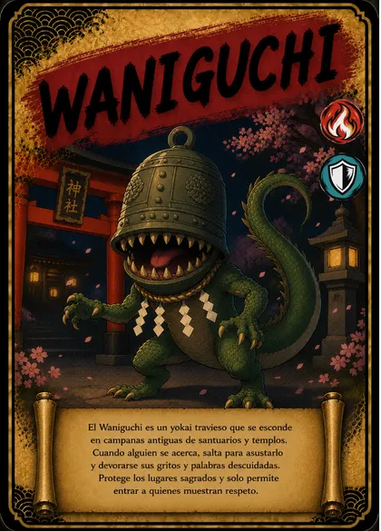
La campana de la gran sonrisa
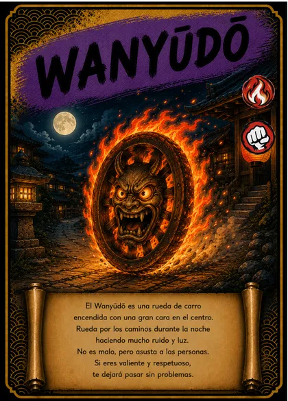
La rueda que ilumina la noche
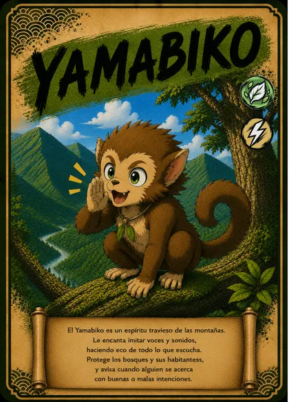
La voz que vuelve desde el monte
Probá con otro nombre o cambiá los filtros.
💡 UN MUNDO LLENO DE SORPRESAS
En las historias de Japón, hay criaturas que se esconden en los bosques, luces que bailan en la noche y hasta paraguas que cobran vida. A muchos de esos seres extraordinarios los llamamos yōkai.
Algunos son traviesos, otros misteriosos. En TAIKARDS, sus historias se transforman en una aventura para chicos: descubrir, imaginar y aprender juntos.
Los relatos de estas fichas están adaptados a partir de nuestras cartas. Mezclan inspiración del folclore japonés con personajes y versiones del Kodomo Taikai; no son una reproducción literal de las leyendas.
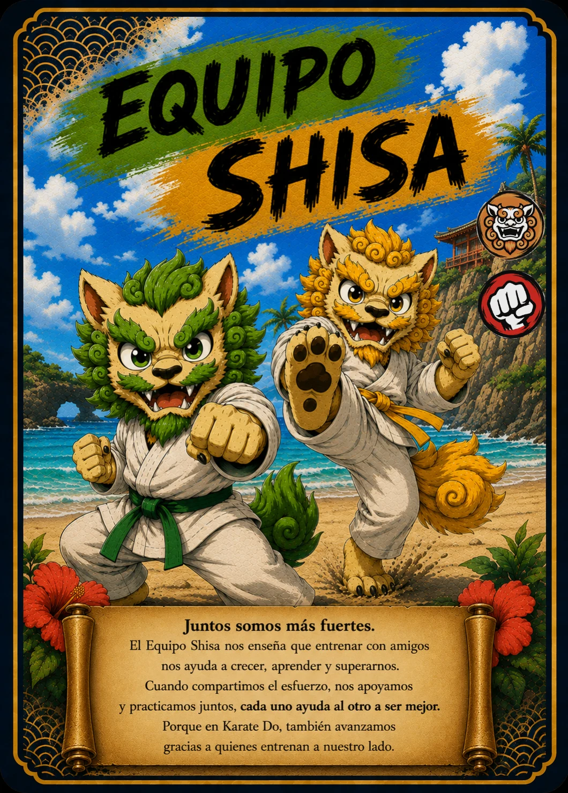
🌟 TUS AMIGOS SHISA
Desde Okinawa llegan los Shisa, nuestros guardianes del Kodomo Taikai. Con valentía, amistad y muchas ganas de aprender, te acompañan a descubrir un mundo increíble.
Conocé al Equipo Shisa ↗Nuevas criaturas mitológicas, cartas de efectos y legendarias. Todavía quedan muchas historias por descubrir.